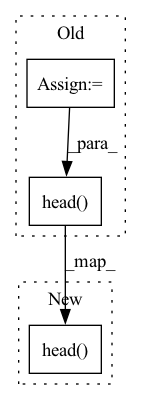

Pattern ID :202

Before Change
return out1, out2
"""
out = self.fuse(outs, training=training)
out1, out2 = self.contrast(outs[0], outs[1], inputs[2])
return self.head(out, training=training), out1, out2
def train(
After Change
if classifier:
//out = self.fuse(outs, training=training)
return self.head(outs[1], training=training)
else:
out1, out2 = self.contrast(outs[0], outs[1], inputs[2])
return out1, out2
"""
In pattern: SUPERPATTERN
Frequency: 5
Non-data size: 3
Instances
Fragment ID: 1667595
Project Name: pliang279/multibench
Commit Name: 2b7e451ed36b87c0bd825a1f8891fe752f5a143e
Time: 2021-05-05
Author: ztwu_nil@zju.edu.cn
File Name: training_structures/Contrastive_Learning.py
M Class Name: MMDL
N Class Name: MMDL
M Method Name: forward(4)
N Method Name: forward(4)
M Parent Class: nn.Module
N Parent Class: nn.Module
M File Name: training_structures/Contrastive_Learning.py
N File Name: training_structures/Contrastive_Learning.py
M Start Line: 26
M End Line: 45
N Start Line: 26
N End Line: 40
'>
Before Change
def forward(self, x, y, variables, out_variables, metric, lat):
embeddings = self.forward_encoder(x) // B, TxL, D
embeddings = embeddings
preds = self.head(embeddings)[:, -self.num_patches :]
loss, preds = self.forward_loss(y, preds, variables, out_variables, metric, lat)
return loss, preds
After Change
def forward(self, x, y, variables, out_variables, metric, lat):
embeddings = self.forward_encoder(x) // B, L, D
preds = self.head(embeddings)
loss, preds = self.forward_loss(y, preds, variables, out_variables, metric, lat)
return loss, preds
def predict(self, x, variables):
'>
Fragment ID: 1667594
Project Name: aditya-grover/climate-learn
Commit Name: 4634cf424013efe05e00d49e4322530bb6f06a21
Time: 2022-09-11
Author: ductungnguyen1997@gmail.com
File Name: src/models/components/vit.py
M Class Name: VisionTransformer
N Class Name: VisionTransformer
M Method Name: forward(7)
N Method Name: forward(7)
M Parent Class: nn.Module
N Parent Class: nn.Module
M File Name: src/models/components/vit.py
N File Name: src/models/components/vit.py
M Start Line: 199
M End Line: 201
N Start Line: 176
N End Line: 177
'>
Before Change
return out1, out2
"""
out = self.fuse(outs, training=training)
out1, out2 = self.contrast(outs[0], outs[1], inputs[2])
return self.head(out, training=training), out1, out2
def train(
After Change
if classifier:
//out = self.fuse(outs, training=training)
return self.head(outs[1], training=training)
else:
out1, out2 = self.contrast(outs[0], outs[1], inputs[2])
return out1, out2
"""
'>
Fragment ID: 1667596
Project Name: pliang279/multibench
Commit Name: 50c6848b1f4b0a9f497fcc48a01e4869e6925de6
Time: 2021-05-05
Author: ztwu_nil@zju.edu.cn
File Name: training_structures/Contrastive_Learning.py
M Class Name: MMDL
N Class Name: MMDL
M Method Name: forward(4)
N Method Name: forward(4)
M Parent Class: nn.Module
N Parent Class: nn.Module
M File Name: training_structures/Contrastive_Learning.py
N File Name: training_structures/Contrastive_Learning.py
M Start Line: 26
M End Line: 45
N Start Line: 26
N End Line: 40
'>
Before Change
def forward(self, x, keep_features=False):
features = self.backbone(x)
features = features.view(x.size(0), -1)
features = self.bottleneck(features)
if keep_features:
return self.head(features), features
else:
return self.head(features)
def get_parameters(self):
params = [
{"params": self.backbone.parameters(), "lr_mult": 0.1},
After Change
features = self.backbone(inputs)
features = self.bottleneck(features)
outputs = self.head(features)
if keep_adv_output:
features_adv = self.grl_layer(features)
self.grl_layer.step()
outputs_adv = self.adv_head(features_adv)
'>
Fragment ID: 1667599
Project Name: thuml/transfer-learning-library
Commit Name: 6715ce965493b31f0defccaf6c0b1a654ffd4a0a
Time: 2020-03-11
Author: JiangJunguang1123@outlook.com
File Name: dalib/adaptation/mdd.py
M Class Name: Classifier
N Class Name: Classifier
M Method Name: forward(3)
N Method Name: forward(3)
M Parent Class: nn.Module
N Parent Class: nn.Module
M File Name: dalib/adaptation/mdd.py
N File Name: dalib/adaptation/mdd.py
M Start Line: 151
M End Line: 159
N Start Line: 125
N End Line: 135
'>
Before Change
def predict(self, x, variables):
with torch.no_grad():
embeddings = self.forward_encoder(x)
embeddings = embeddings
pred = self.head(embeddings)[:, -self.num_patches :]
return self.unpatchify(pred)
def rollout(self, x, y, variables, out_variables, steps, metric, transform, lat, log_steps, log_days):
After Change
def predict(self, x, variables):
with torch.no_grad():
embeddings = self.forward_encoder(x)
pred = self.head(embeddings)
return self.unpatchify(pred)
def rollout(self, x, y, variables, out_variables, steps, metric, transform, lat, log_steps, log_days):
preds = []
'>
Fragment ID: 1667602
Project Name: aditya-grover/climate-learn
Commit Name: 4634cf424013efe05e00d49e4322530bb6f06a21
Time: 2022-09-11
Author: ductungnguyen1997@gmail.com
File Name: src/models/components/vit.py
M Class Name: VisionTransformer
N Class Name: VisionTransformer
M Method Name: predict(3)
N Method Name: predict(3)
M Parent Class: nn.Module
N Parent Class: nn.Module
M File Name: src/models/components/vit.py
N File Name: src/models/components/vit.py
M Start Line: 207
M End Line: 209
N Start Line: 183
N End Line: 184